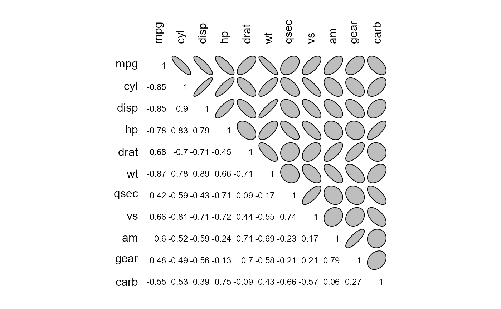

Correlation plot with ellipses
e_plot_corr_ellipse( corr, outline = FALSE, col = "grey", upper.panel = c("ellipse", "number", "none")[1], lower.panel = c("ellipse", "number", "none")[2], diag = c("none", "ellipse", "number")[3], digits = 2, bty = "n", axes = FALSE, xlab = "", ylab = "", asp = 1, cex.lab = par("cex.lab"), cex = 0.75 * par("cex"), mar = c(0, 0, 1, 0), ... )
| corr | correlation matrix |
|---|---|
| outline | option |
| col | option |
| upper.panel | option |
| lower.panel | option |
| diag | option |
| digits | option |
| bty | option |
| axes | option |
| xlab | option |
| ylab | option |
| asp | option |
| cex.lab | option |
| cex | option |
| mar | option |
| ... | option |
if (FALSE) { ## Color version # red neg, white 0, blue pos color_scale <- c( rgb(241, 54, 23, maxColorValue = 255) , "white" , rgb( 0, 61, 104, maxColorValue = 255) ) # color ramp in "Lab" space color_ramp <- colorRampPalette(color_scale, space = "Lab") # Create scale with 100 points colors_plot <- color_ramp(100) # move correlation range from [-1, 1] to [0, 100] for colors datasets::mtcars %>% cor() %>% e_plot_corr_ellipse( col = colors_plot[((. + 1)/2) * 100] , main = "Colored ellipses" ) }